Prerequisites
These steps assume the following have been completed:
- Your Administrator has created a valid External Network for your environment.
- Your Administrator has provided you with the IP address or hostname for the Horizon
Dashboard.
These steps use the pre-setup demo user account in HPE Helion OpenStack 2.0.
If your Administrator has setup a separate user account for you then you will use those
credentials to access Horizon.
Creating a Router
- Access Horizon and log in with your credentials. Contact your Administrator if you do
not know your login credentials.
- Open the Create Router wizard by following these steps:
- Navigate to Routers under the Network menu.
- Click on the Create Router button.
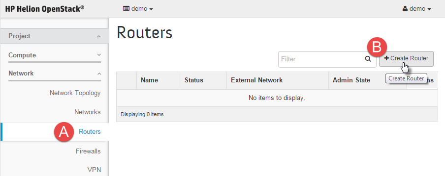
- Give your router a name and then click the Create Router button again:
- Select a Router Name.
- Select an External Network from the drop down menu.
- Click on the Create Router button.
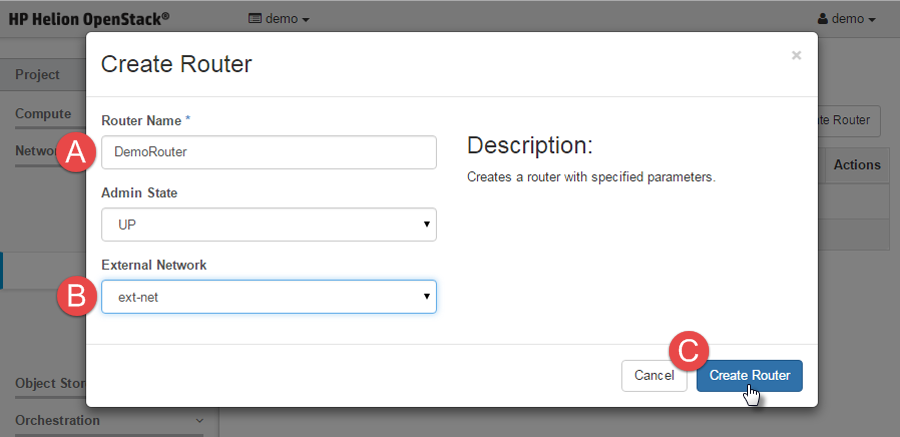
Here is what a successful outcome looks like:
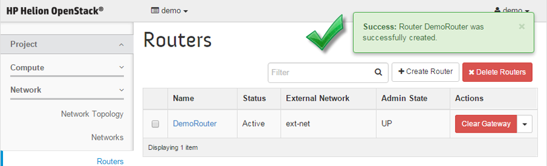
- To confirm your router is setup properly you can:
- Click on the Network Topology menu option and ensure it looks like the
screen shot below:
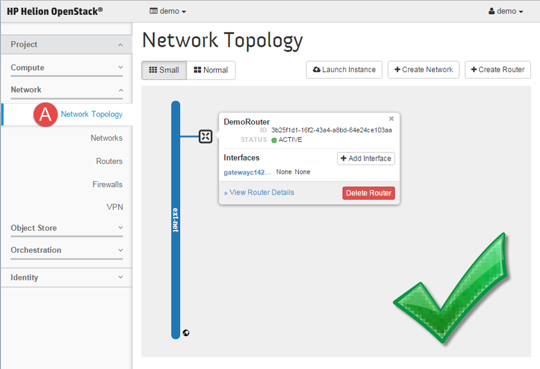
Creating a Network and Subnet
- Access Horizon and login with the following credentials:
Username: demo
Password: demo
- Open the Create Network wizard by following these steps:
- Navigate to Networks under the Network menu.
- Click on the Create Network button.
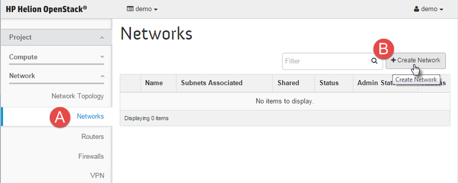
- On the first window of the create network wizard:
- Choose a Network Name.
- Select the Next button.
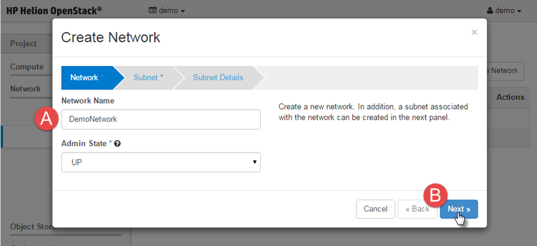
- On the second window of the create network wizard:
- Choose a Subnet Name.
- Enter a Network Address (CIDR) for your subnet.
- Select the Next button.
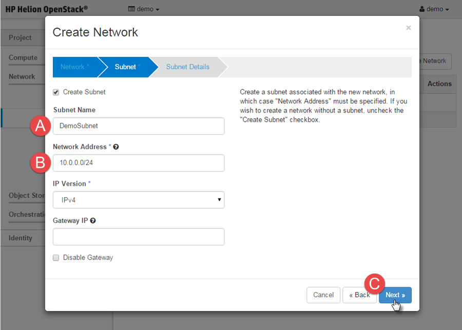
- On the final window of the create network wizard:
- Ensure that Enable DHCP is checked.
- For a basic network setup, leave the Allocation Pools, DNS Name
Servers, and Host Routes fields blank.
- Select Create when finished.
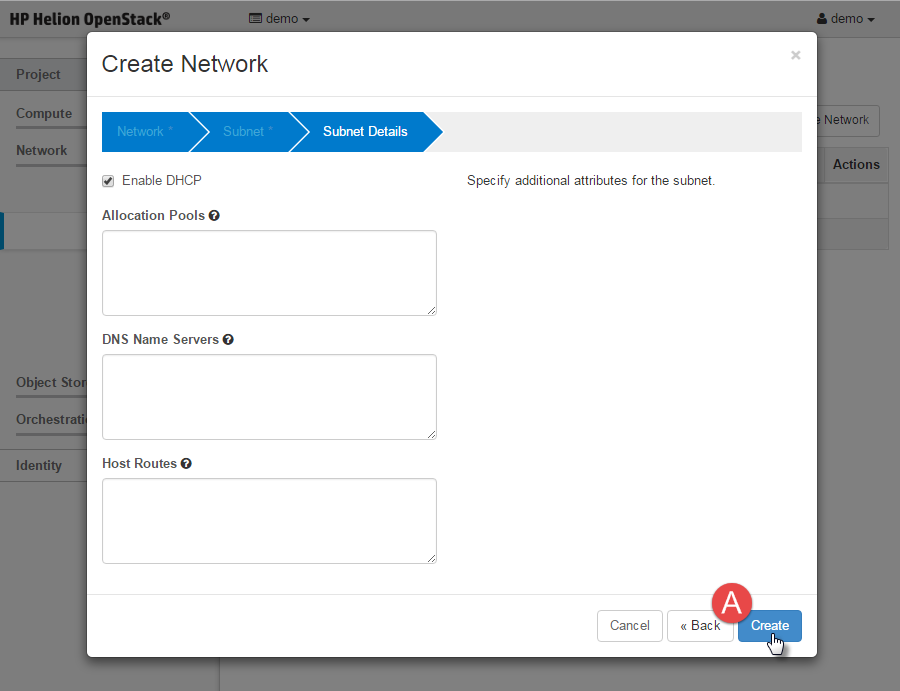
Here is what a successful outcome looks like:
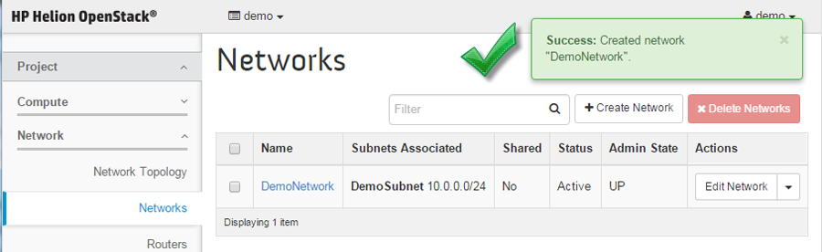
- Next step is to attach your subnet to your router.
- Navigate to Routers under the Network menu.
- Click on your router name to bring up it's settings.
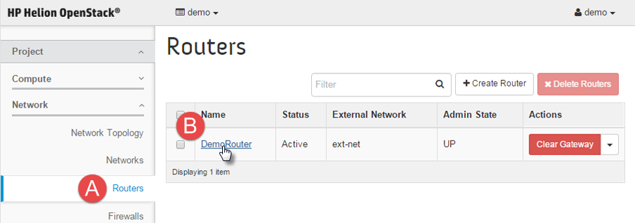
- Create the interface by:
- Select the Interface tab.
- Click the Add Interface button.
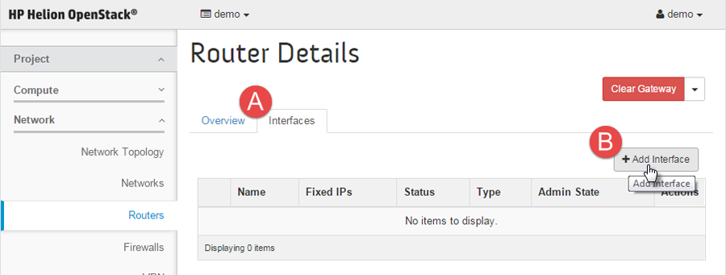
- Complete the interface creation by:
- Select your subnet from the drop down menu.
- select the Add Interface button.
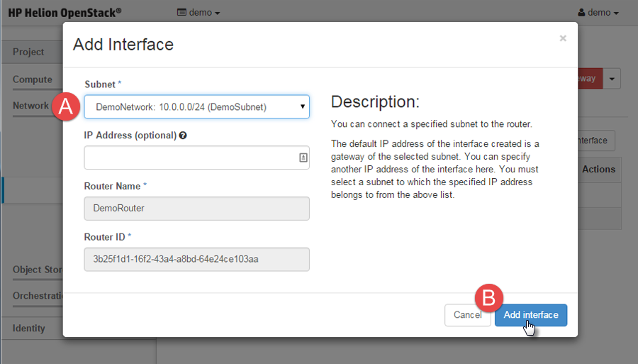
CAUTION:
Do not enter a value for the IP Address (Optional) field as this
can cause other issues.
- To confirm your router is setup properly you can:
- Click on the Network Topology menu option and ensure it looks like the screen
shot below:
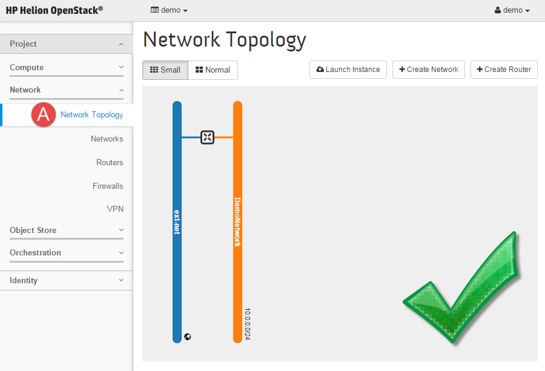